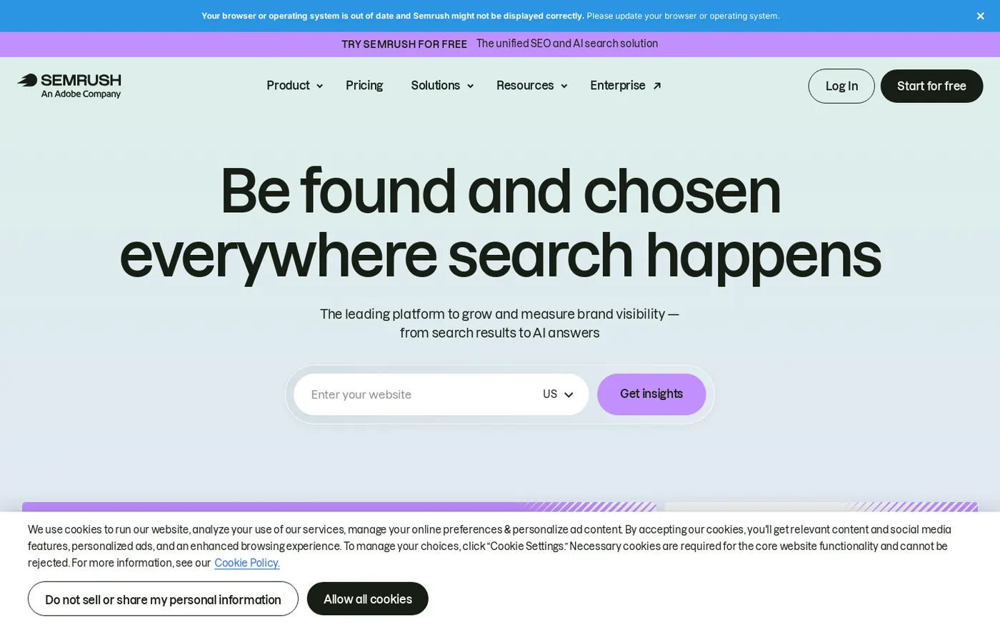
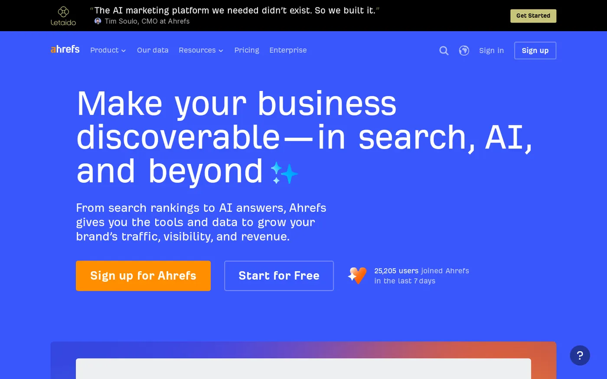
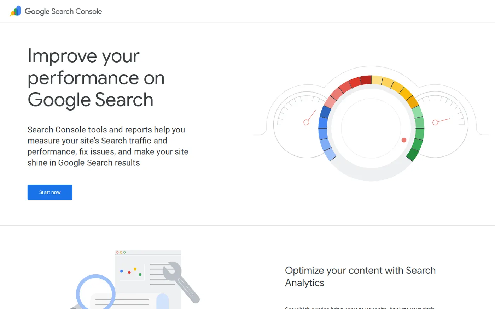
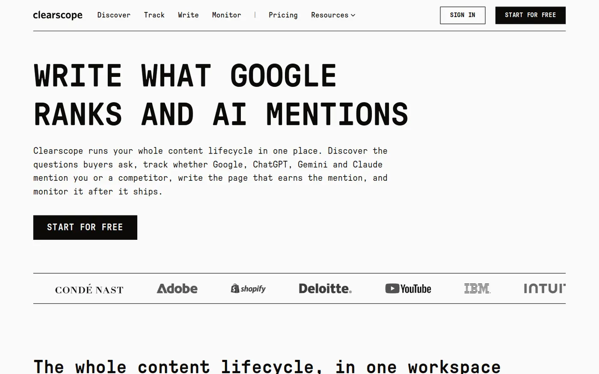
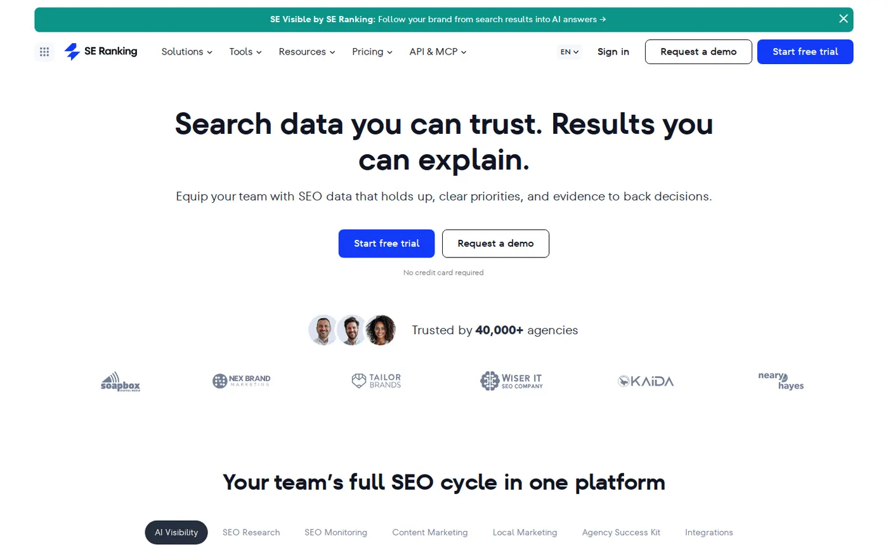
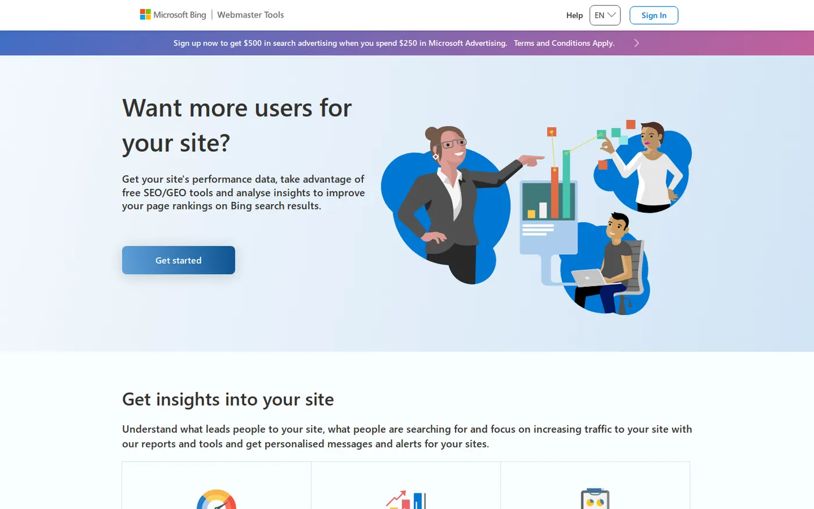
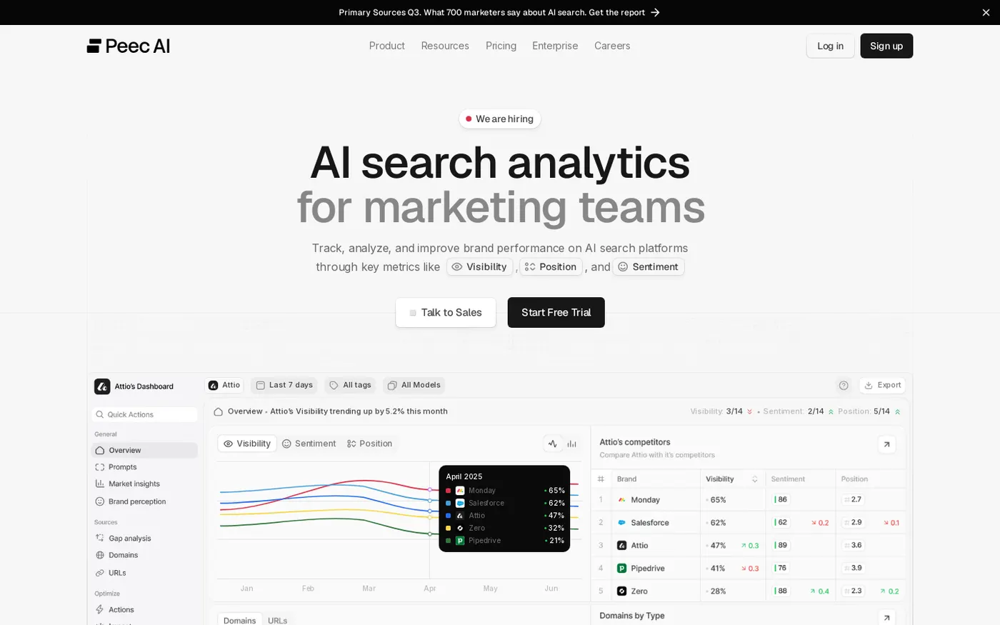
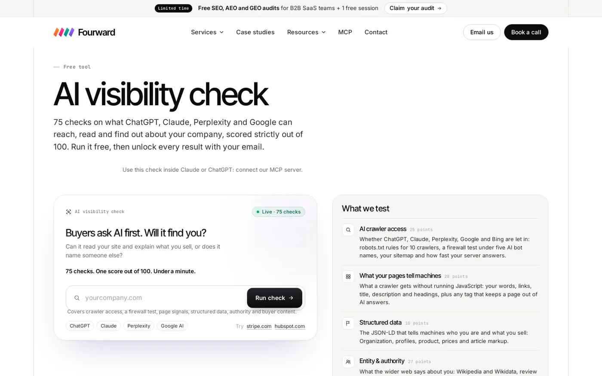

On this page
For most SaaS teams in 2026, the best SEO tools are one research suite (Semrush or Ahrefs), Google Search Console and a site crawler such as Screaming Frog. Add a content tool, a rank tracker or an AI answer tracker only when someone on your team owns that job. The big suites overlap, so pick one tool per job instead of paying twice for the same data.
I lead field marketing and events at Fourward, and my work covers budgets and vendors. This guide names one tool for each SEO job, with prices from each company's own pricing page, checked on 16 November 2026.
I work at Fourward, which publishes this guide. One entry is ours: the free AI visibility check, listed last. My colleague Deepak Sharma, who leads search at Fourward, uses Ahrefs in his work, so read that entry with this in mind. Every other fact comes from that company's own website, checked on 16 November 2026. No vendor paid to be included.
- An SEO tool is software that shows what buyers search for, what stops search engines reading your site and where your pages appear, now including AI answers.
- SaaS SEO work splits into seven jobs. One suite, such as Semrush or SE Ranking, covers several of them, so buy a specialist tool only for a gap.
- Free tools go further than most teams expect. Google Search Console is free, and Screaming Frog crawls up to 500 URLs without a licence.
- Paid entry prices run from $29 a month (Ahrefs Starter) to $139 billed monthly (Semrush SEO). A full stack with a content tool and an AI tracker costs about $363 a month, plus €245 a year for a crawler.
Which SEO jobs a SaaS team needs tools for
SEO (search engine optimization) is the work of getting your pages found in search results. For a SaaS company, that work falls into seven jobs, and each job has its own kind of tool. Our guide to SEO for B2B SaaS covers the strategy behind these jobs.
- Keyword researchFinding the words buyers type into Google, and roughly how often they type them.
- Competitor researchSeeing which pages and keywords bring traffic to the companies you compete with.
- Your own search dataThe real searches, clicks and errors Google and Bing record for your site.
- Technical auditsCrawling your site to find broken pages, redirect loops and missing tags. A crawl is a program visiting every page, the way a search engine does.
- Content optimizationChecking a draft against the pages that already rank, so it covers what searchers expect.
- Rank trackingChecking where your pages appear in Google for a fixed list of keywords, every day or week.
- AI answer trackingChecking whether ChatGPT, Copilot and Google's AI answers name or cite your brand. A citation is a link to your page shown as a source.
Write down which of the seven jobs someone on your team does every week. Only those jobs need a paid tool.
How I picked one tool per job
I started from the tools SaaS teams name most often for each job. I kept one strong pick per job, plus a second suite where the choice really splits teams. For each tool, I read its own pricing page and checked the entry price, the free option and any AI search features.
I did not sign up for or test these tools, so nothing here claims hands-on results. The order follows the work: research first, then audits and content, then AI answers.
The best SEO tools for SaaS at a glance
The same four facts for every tool. Scroll the table sideways on a phone.
| Tool | Job | Starts at | Free option |
|---|---|---|---|
| Semrush | All-in-one research suite | $117.33/mo billed annually, or $139 monthly | Free plan and 7-day trial |
| Ahrefs | Competitor and AI prompt research | $29/mo (Starter) | Ahrefs Free, for your own site |
| Google Search Console | Your own Google data | Free | Free |
| Screaming Frog SEO Spider | Technical audits | €245 a year per licence | Free up to 500 URLs |
| Clearscope | Content optimization | $129/mo (Essentials) | Not confirmed |
| SE Ranking | Rank tracking on a budget | $103.20/mo as listed (Core) | 14-day trial |
| Bing Webmaster Tools | Bing and Copilot citation data | No price shown | Not confirmed |
| Peec AI | AI answer tracking | $95/mo (Starter) | Free trial |
| Fourward AI visibility check | Checking what AI engines can read | Free | Free |
1. Semrush
Best for SaaS teams that want keyword research, competitor data and AI search tracking under one login.

Semrush is an SEO suite, which means one subscription covers many SEO jobs instead of one. Semrush's pricing page sells SEO plans and SEO plus AI search plans side by side. Even the basic SEO plan lists a feature to "track performance in AI search".
- JobKeyword and competitor research, plus AI search tracking.
- PricingThe SEO plan is $139 billed monthly, or $117.33 a month billed annually. Pricing page
- Free optionA free plan for trying out the platform, with no credit card required, plus a seven-day free trial.
- AI searchThe free plan lists AI Visibility features, and the SEO plan includes AI search tracking.
My take The safest single pick if you want one bill for most SEO jobs. Semrush's annual price is about $22 a month lower than its monthly price, so decide on the billing term before you compare it with other tools.
2. Ahrefs
Best for Researching competitors and the questions people ask AI tools in your market.

Ahrefs is the other big SEO suite. Ahrefs pitches its cheapest plan, Starter, as a way to "see what people search and spy on competitors". Ahrefs' AI research tool, Brand Radar, lets you research any brand across 572 million+ prompts and track your own AI prompts. A prompt is the question a person types into an AI tool such as ChatGPT.
- JobCompetitor research and AI prompt research.
- PricingStarter is $29 a month. Lite is $129, Standard $249 and Advanced $449 a month. Paying annually saves up to 17%. Pricing page
- Free optionAhrefs Free, which gives you Ahrefs data on your own site.
- AI searchBrand Radar, with research across 572 million+ prompts from the Ahrefs database.
My take Pick Ahrefs or Semrush, not both, unless two teams use them every day. Our Semrush vs Ahrefs comparison shows where each one is stronger.
3. Google Search Console
Best for Seeing the real Google data for your own site, free.

Google Search Console is a free service offered by Google. Google says its reports help you measure your site's Search traffic and performance, and fix issues. The research suites above estimate traffic from their own data. Search Console reports what Google itself recorded for your site.
- JobYour own Google search data and indexing problems. Indexing means Google adding a page to the list of pages it can show in results.
- PricingFree. About Search Console
- What it checksSearch Console confirms that Google can find and crawl your site.
- AlertsGoogle alerts you when it finds indexing, spam or other issues on your site.
My take Set up Search Console before you pay for anything. Search Console is the only tool in this list that shows what Google itself recorded for your pages.
4. Screaming Frog SEO Spider
Best for Technical audits that find broken pages, redirects and missing tags across your whole site.

Screaming Frog's SEO Spider is a crawler, a program that visits every page on your site and lists what it finds. Screaming Frog's free version crawls up to 500 URLs. A paid licence removes that limit.
- JobTechnical audits of your own site.
- Pricing€245 per licence a year, as listed on the pricing page when I checked. Pricing page
- Free optionThe free version, with a crawl limit of 500 URLs.
- With a licenceThe crawl limit is listed as unlimited.
My take 500 URLs covers a small marketing site. A blog, docs and a help centre push most SaaS sites past that, so budget for the licence. Our guide to Screaming Frog alternatives covers other crawlers and their prices.
Free check. 75 checks, one score out of 100, under a minute.
5. Clearscope
Best for Content teams that want a clear target for each article, plus AI mention tracking.

Clearscope is a content optimization tool for writers and editors. Clearscope's pricing page says it helps you understand where and how your brand appears across search engines and AI systems, not just where you rank.
- JobContent optimization for articles and landing pages.
- PricingEssentials, the cheapest plan, is $129, billed monthly. Pricing page
- Free optionI could not confirm a free trial on the pricing page.
- AI searchClearscope tracks specific queries across ChatGPT and Gemini, to show when and how your brand gets mentioned.
My take Clearscope is worth it when you publish several articles a month and writers need a clear target. If you publish twice a month, start with the suite you already pay for.
6. SE Ranking
Best for Daily rank tracking on a smaller budget, with AI visibility tracking as an option.

SE Ranking is a lower-cost SEO suite. SE Ranking's Core plan tracks 2,000 keywords every day, which suits a team that mainly needs to watch rankings.
- JobRank tracking, inside a full SEO suite.
- PricingCore is listed at $103.20 a month, next to a struck-through $129.00. Check the billing term before you buy. Pricing page
- Free optionA 14-day free trial.
- AI searchA separate AI visibility product starts at $71 a month.
My take A sensible pick if Semrush or Ahrefs offers more than you need. 2,000 daily keywords is a lot of tracking for a SaaS site with one product.
7. Bing Webmaster Tools
Best for Seeing when Microsoft Copilot and Bing's AI summaries cite your pages.

Bing Webmaster Tools is Microsoft's tool for site owners, for Bing search. On 10 February 2026, Bing added a report called AI Performance as a public preview. A public preview means the feature is live but still being tested.
- JobYour own Bing data and AI citations.
- PricingNo price was shown on the Bing pages I checked.
- What it showsBing says AI Performance shows how publisher content appears across Microsoft Copilot and AI-generated summaries in Bing. Bing announcement
- AI searchThe report counts the citations shown as sources in AI-generated answers.
My take Bing Webmaster Tools is the only tool here that reports AI citations from a search engine's own records, not from sample prompts. Copilot is one engine, so pair it with a tracker if your buyers use ChatGPT.
8. Peec AI
Best for Tracking whether ChatGPT, Perplexity and Google's AI answers name your brand.

Peec AI is an AI search tracker. You give Peec AI a list of prompts, and it checks the AI answers for your brand and your competitors. Peec AI's Starter plan lets you choose 3 models from a list that includes ChatGPT, Perplexity, Gemini and Google's AI Overviews and AI Mode.
- JobAI answer tracking.
- PricingStarter is $95 a month for 50 prompts. Annual billing gets a 15% discount. Pricing page
- Free optionA free trial.
- AI search3 AI models of your choice on Starter.
My take 50 prompts covers your core buying questions, not a whole category. Our guide to the best AI visibility tools compares 11 tools if you need more prompts or engines.
9. Fourward AI visibility check
Best for Finding what stops AI engines reading your site, free.

Every tracker above tells you whether AI names you. Fourward's free AI visibility check looks at the step before that. The check runs 75 checks on what AI engines can read about your site.
- JobChecking whether AI engines can read your site before you track them.
- PricingFree.
- Also freeThe AI crawler checker tests 20 AI crawlers against your robots.txt and firewall. Robots.txt is the file that tells crawlers which pages they may visit.
- In your AI assistantA free MCP server runs both checks from Claude, ChatGPT, Cursor or VS Code. MCP (Model Context Protocol) lets AI assistants use outside tools.
My take Run the check before you pay for an AI tracker. If AI crawlers are blocked, a tracker will report the same zero every day.
What an SEO tool stack costs a SaaS team
Here are three stacks built from the tools above, from free to full. Prices are in US dollars unless noted, as published on 16 November 2026.
| Stack | Tools | Cost | Fits |
|---|---|---|---|
| Free | Search Console, Screaming Frog free, Semrush free plan, Ahrefs Free, Fourward check | $0 | Small sites and teams starting out |
| Lean | SE Ranking Core, Screaming Frog licence, Search Console | $103.20 a month as listed, plus €245 a year | One marketer running SEO part-time |
| Full | Semrush SEO, Clearscope Essentials, Peec AI Starter, Screaming Frog licence, Search Console | $363 a month billed monthly, plus €245 a year | A content team publishing weekly and tracking AI answers |
The biggest saving is choosing one suite. Semrush's SEO plan at $139 and Ahrefs Lite at $129 add up to $268 a month, for two tools that do many of the same jobs.
Start with the free stack. Then pay for a tool for the one job that slows your team down most.
How to choose SEO tools for a SaaS team
These five steps, in this order, keep the stack small.
- List the jobs you do every week. Pay for a tool only if someone will open it at least once a week.
- Set up the search engines' own tools first. Search Console and Bing Webmaster Tools show what Google and Bing record for your site.
- Pick one research suite. Compare Semrush, Ahrefs and SE Ranking on the plan you would actually buy, with the same billing term.
- Add a crawler when your site passes 500 URLs. Screaming Frog's free version stops at that limit.
- Check AI readiness before AI tracking. A free check shows whether AI crawlers can read your site before you pay to track answers.
Mistakes SaaS teams make when buying SEO tools
These five buying habits waste money on SEO tools.
- Paying for two suites. Semrush and Ahrefs cover many of the same jobs, so two subscriptions often means paying twice for the same data.
- Comparing a monthly price with an annual one. Semrush's SEO plan is $139 billed monthly but $117.33 a month billed annually, so compare like with like.
- Tracking AI answers before AI can read the site. If AI crawlers are blocked, an AI tracker will only confirm that you are missing.
- Buying a content tool before a publishing schedule. A content optimization tool is only worth the money when articles go out every week or two.
- Skipping the free search engine tools. Search Console and Bing Webmaster Tools report your own data, which no paid suite can fully replace.
A full SEO, AEO and GEO audit, plus 30 minutes with our team to walk you through it.
FAQs
What is the best SEO tool for a SaaS company?
For most SaaS teams, one suite such as Semrush or Ahrefs plus Google Search Console covers the main jobs. Add Screaming Frog for technical audits once your site passes 500 URLs.
How much do SEO tools cost for a SaaS team?
Paid suites start at $29 a month for Ahrefs Starter, and Semrush's SEO plan is $139 billed monthly. A full stack with a content tool and an AI tracker costs about $363 a month, plus €245 a year for Screaming Frog.
Can a SaaS team do SEO with free tools only?
Yes, at the start. Google Search Console is free, Screaming Frog crawls up to 500 URLs free, and Semrush and Ahrefs both offer free options with limits.
Do I need both Semrush and Ahrefs?
Usually not. The two suites cover many of the same jobs, so most SaaS teams pick one and spend the difference on a crawler or an AI tracker.
Can SEO tools track ChatGPT and other AI answers?
Some can. Semrush's SEO plan lists AI search tracking, Ahrefs has Brand Radar, Clearscope tracks queries in ChatGPT and Gemini, and Peec AI is built for AI tracking. Bing Webmaster Tools reports citations in Copilot.
Sources
- SEO & AI Search Plans and Pricing, Semrush, checked 16 November 2026.
- Plans & Pricing, Ahrefs, checked 16 November 2026.
- About Search Console, Google Search Console Help, checked 16 November 2026.
- Google Search Console, Google, checked 16 November 2026.
- Pricing, Screaming Frog, checked 16 November 2026.
- Plans & Pricing, Clearscope, checked 16 November 2026.
- Subscription, SE Ranking, checked 16 November 2026.
- Introducing AI Performance in Bing Webmaster Tools Public Preview, Microsoft Bing Blog, 10 February 2026, checked 16 November 2026.
- Pricing for Peec AI, Peec AI, checked 16 November 2026.